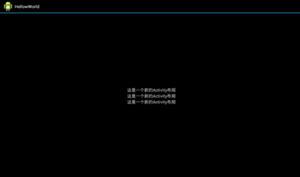
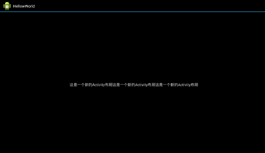
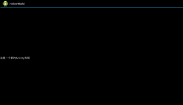
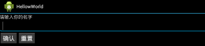

6.线性布局：构建一个简单的用户界面
这节课我们来讲讲如何构建一个简单的用户界面。想必使用安卓的大家知道的，很多软件的界面都是很漂亮的，一个用户界面是如何构建出来的呢？大家知道，我们这里讲的用户界面布局实际上就是Activity的布局，Activity的布局是res/layout文件夹下与之相对应的一个.xml后缀文件所决定的，这里我们用上节讲到的例子继续。
首先我们先回忆一下上课节源码的运行结果和newone.xml中的代码，我们运行起来的起来的界面中只有“这是一个新的Activity布局”几个字，为什么会有这几个字呢？我们先来看看newone.xml中的源码，源码的第一行是声明xml文件以及字符编码的，一般xml文件第一行要有这个。第二行我们看到LinearLayout是什么意思呢？它代表一种布局方式，下面我们来罗列一下常用布局方式（布局管理器）：
LinearLayout：线性布局
RelativeLayout：相对布局
FrameLayout：框架布局
TableLayout：表格布局
TabLayout：标签布局
ListLayout：列表布
AbsoluteLayout：绝对布局
很多吧？我们常看到的软件个界面就由这些布局搭配嵌套而成的。那么我现在就来理解下newone.xml中使用到的LinearLayout线性布局。线性布局顾名思义就是排成一线，也就是说，被LinearLayout标签包裹的控件会排成一线，线有两个形式：横和竖。准确的说就是：垂直排列（vertical）和水平排列（horizontal）两种形式。从代码中的android:orientation="vertical"（注：android:xxx=yyy一般指布局方式或者控件的xxx属性，属性的值为yyy），可以看出，这个LinearLayout标签里的控件将会以垂直排列（vertical）。下面我们来做个实验，看以下代码：
由于原本只有一个TextView（文本组件），垂直排列线性布局效果显示不出来，这里我将TextView的代码多复制了两段，现在我们的界面就有3个TextView组件了，下面我们看看运行效果：

如上图，我们看到3个TextView组件已经垂直排列垂直排列在界面上了。这只是线性布局垂直排列的效果，那么水平排列是什么效果呢？我们把LinearLayout标签下的android:orientation="vertical"改为android:orientation="horizontal"再运行看看：

我们来看看第一个TextView组件的属性设置： android:layout_width="wrap_content"，这句话什么意思呢？从字面的英语上理解，width是宽度，wrap_content值的意思是，文字有多宽，组件就多宽。好的，我们把这句改为android:layout_width="fill_parent"，运行看看。

嗯？怎么只有一个组件了呢？回头看看刚刚那句android:layout_width="fill_parent"，fill是充满填满，然后我们就可以大概的理解：这个TextView组件width宽度属性是fill填满，也就是这一个TextView组件的宽度将填满屏幕宽度。问题知道了，其中一个TextView组件的宽度就填满了屏幕宽度，哪还容得下其他两个TextView组件啊！
其实，一个.xml布局文件可以有多个布局相互嵌套（比如LinearLayout线性布局），我们可以试试在垂直排列的LinearLayout标签里嵌入两个水平排列的LinearLayout布局，每个LinearLayout布局里有3个组件，这样写的目的是让两个水平排列的LinearLayout布局一个上一个下垂直排列,代码如下：
要注意的是，嵌套在里面的两个水平排列的LinearLayout布局的属性android:layout_height="fill_parent"要改为android:layout_height="wrap_content"（height为高度的意思），不然其中一个会水平布局的高度会占满整个屏幕的高度，到时你就只能看到一个嵌套在里面的水平排列的内容。Save保存运行一下，如下图：
可以看到，两个水平排列的LinearLayout布局的内容垂直排列在屏幕上。 一个简单布局基本就是这样，当然我们这里只放了TextView组件，常用的组件有TextView(文本显示)、EditText(文本输入框)、Button(按钮).....等等。大家可以把代码中的TextView改成EditText或者Button试试看效果。关于更多布局方面的知识，请认真阅读Android开发技巧集合.pdf的35~151页（对原作者说：入门教程就要看100多页书够汗的）。实在看不懂的地方可以略过，这一百多页内容看完，你一定会有不少收获的。
练习1.★★在一个Activity里进行布局，里面有TextView(文本显示)、EditText(文本输入框)、Button(按钮)，效果如下图（不同版本的安卓系统，组件的样式会有点不同，可以不管）：
